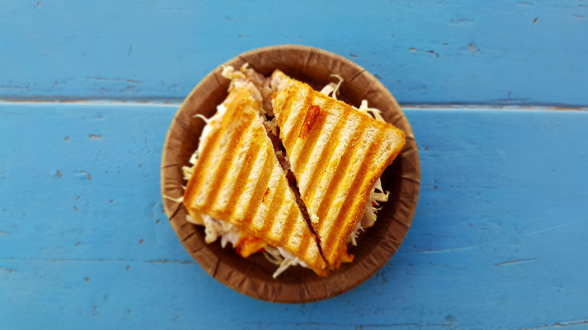

Photo by Asnim Ansari on Unsplash
A grilled cheese sandwich is one of the most iconic comfort foods in American cuisine — a simple, satisfying combination of bread and melted cheese that's been a staple in homes and diners for decades. It's beloved for its crispy, buttery exterior and warm, gooey interior, and works as everything from a quick weekday lunch to a nostalgic late-night snack. Despite its simplicity, it has a huge amount of variation depending on the bread, cheese, and any added ingredients like tomato, bacon, or caramelized onions